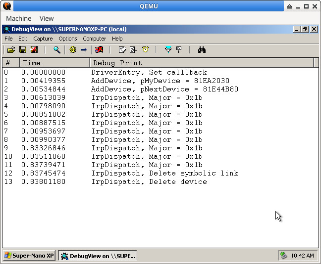
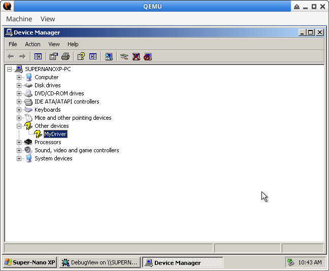
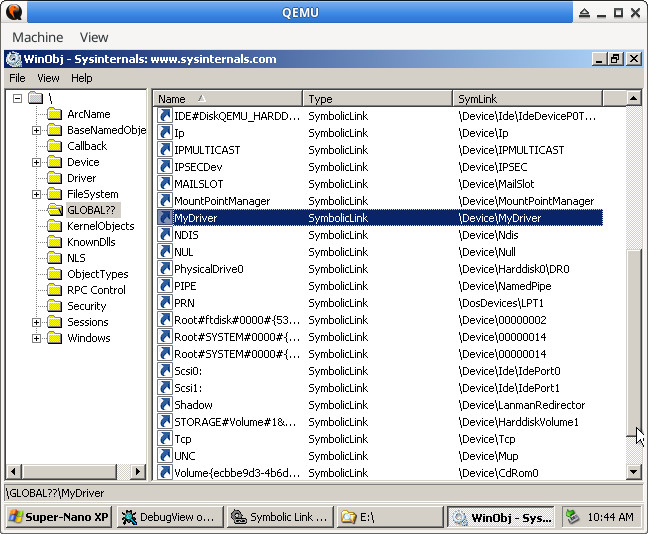

Steward
分享是一種喜悅、更是一種幸福
驅動程式 - Windows Driver Model (WDM) - 使用範例 - C/C++ (DDK) - Add Device
參考資訊：
https://wasm.in/
http://four-f.narod.ru/
https://github.com/steward-fu/wadk
一般會在DriverEntry()註冊感興趣的Callback，其中，AddDevice是用來添加新裝置的Callback，WDM驅動程式的操作主要都是基於PNP訊息，因此，需要額外註冊IRP_MJ_PNP的Callback，這個Callback可以用來接收IRP_MN_REMOVE_DEVICE訊息並且在此訊息中移除裝置，由於WDM驅動程式是基於Stack方式運作，每一層驅動程式都會有自己的Irp Stack，可以透過IoCallDriver()將控制權交給下一層驅動程式繼續處理，如果目前的Irp Stack不需要額外處理，可以直接呼叫IoSkipCurrentIrpStackLocation()，當收到IRP_MN_REMOVE_DEVICE訊息，由於我們會把新增的裝置刪除，代表這個IRP可以由我們獨立完成，不需要下層的驅動程式干預，直接呼叫IoCompleteRequest()完成這個IRP的處理即可
每個Device Object都會有一個名字，可以想像成是驅動程式的名字，當Application要跟驅動程式溝通時，Windows系統允許透過Symbolic Link方式，將Symbolic Link名稱連接到驅動程式的名稱，這是因為驅動程式是位於不同名稱空間的關係，所以Application可以透過存取Symbolic Link來跟驅動程式溝通，一般都是把驅動程式當作檔案操作方式來看待
由於驅動程式是屬於Stack操作方式，因此，新增的裝置需要Attach到下層驅動程式，如果不是Bus相關的驅動程式，一般下層驅動程式就是I/O Manager，當要移除裝置時，則是需要從下層驅動程式Detach
main.c
#include <wdm.h>
static PDEVICE_OBJECT pNextDevice = NULL;
static NTSTATUS AddDevice(PDRIVER_OBJECT pMyDriver, PDEVICE_OBJECT pPhyDevice)
{
PDEVICE_OBJECT pMyDevice = NULL;
UNICODE_STRING usDeviceName = { 0 };
UNICODE_STRING usSymbolName = { 0 };
RtlInitUnicodeString(&usDeviceName, L"\\Device\\MyDriver");
IoCreateDevice(pMyDriver, 0, &usDeviceName, FILE_DEVICE_UNKNOWN, 0, FALSE, &pMyDevice);
DbgPrint("%s, pMyDevice = %p\n", __FUNCTION__, pMyDevice);
RtlInitUnicodeString(&usSymbolName, L"\\DosDevices\\MyDriver");
IoCreateSymbolicLink(&usSymbolName, &usDeviceName);
pNextDevice = IoAttachDeviceToDeviceStack(pMyDevice, pPhyDevice);
DbgPrint("%s, pNextDevice = %p\n", __FUNCTION__, pNextDevice);
pMyDevice->Flags &= ~DO_DEVICE_INITIALIZING;
pMyDevice->Flags |= DO_BUFFERED_IO;
return STATUS_SUCCESS;
}
static NTSTATUS IrpDispatch(PDEVICE_OBJECT pMyDevice, PIRP pIrp)
{
UNICODE_STRING usSymbolName = { 0 };
PIO_STACK_LOCATION pStack = IoGetCurrentIrpStackLocation(pIrp);
DbgPrint("%s, Major = 0x%x\n", __FUNCTION__, pStack->MajorFunction);
if (pStack->MinorFunction == IRP_MN_REMOVE_DEVICE) {
DbgPrint("%s, Delete symbolic link\n", __FUNCTION__);
RtlInitUnicodeString(&usSymbolName, L"\\DosDevices\\MyDriver");
IoDeleteSymbolicLink(&usSymbolName);
DbgPrint("%s, Delete device\n", __FUNCTION__);
IoDetachDevice(pNextDevice);
IoDeleteDevice(pMyDevice);
IoCompleteRequest(pIrp, IO_NO_INCREMENT);
return STATUS_SUCCESS;
}
IoSkipCurrentIrpStackLocation(pIrp);
return IoCallDriver(pNextDevice, pIrp);
}
NTSTATUS DriverEntry(PDRIVER_OBJECT pMyDriver, PUNICODE_STRING pMyRegistry)
{
DbgPrint("%s, pMyDriver = %p\n", __FUNCTION__, pMyDriver);
pMyDriver->MajorFunction[IRP_MJ_PNP] = IrpDispatch;
pMyDriver->DriverExtension->AddDevice = AddDevice;
return STATUS_SUCCESS;
}
完成

新增的裝置

Symbolic Link
